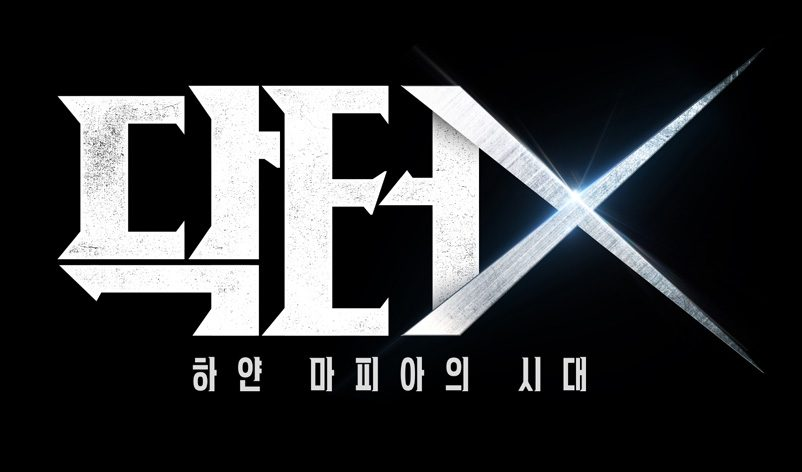
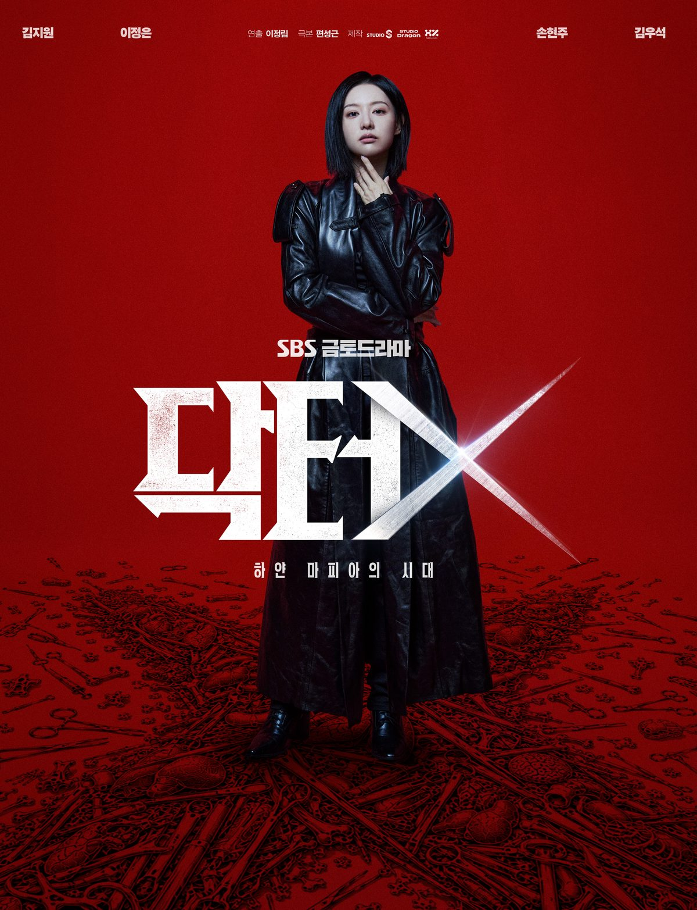
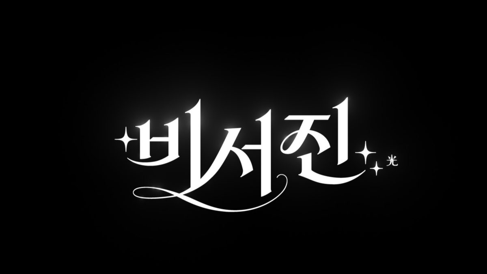
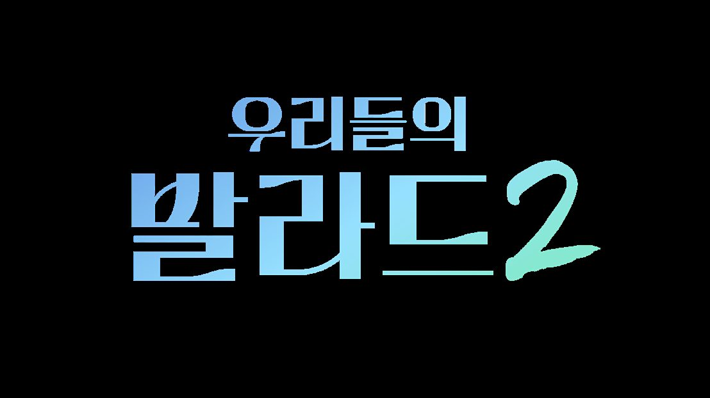
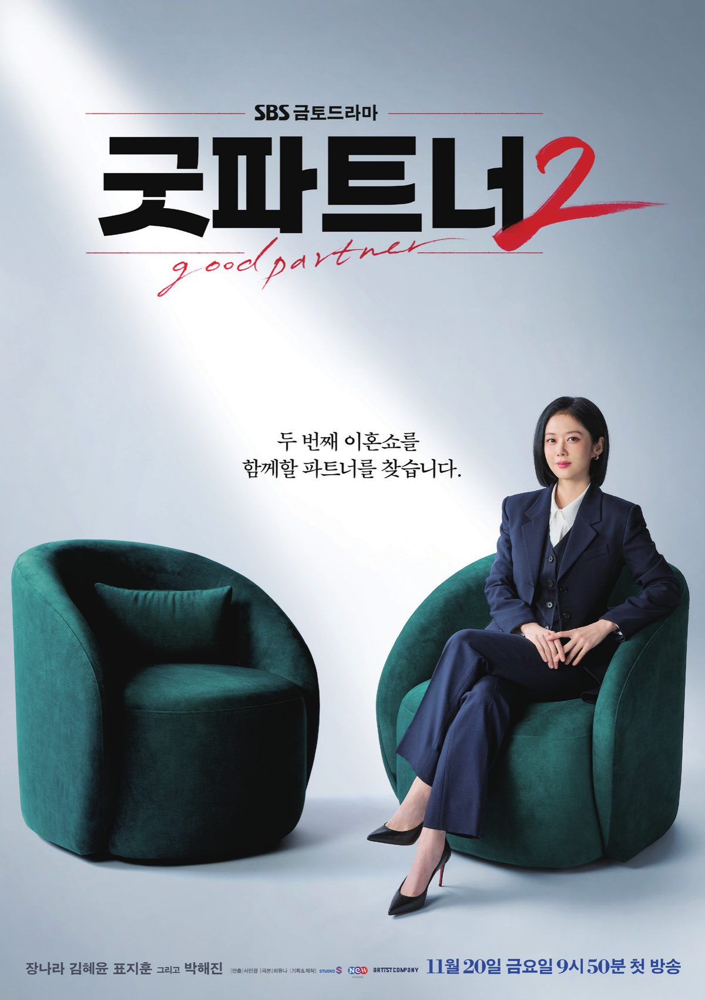

금토 21시 50분
닥터X: 하얀 마피아의 시대
천재적인 수술 실력으로 부조리를 깨부수는 계수정의 사이다 메디컬 느와르.
ON AIR닥터X: 하얀 마피아의 시대 금토 21:50 · ~11/14
NEW굿파트너2 금토 21:50 · 11/20 첫 방송
NEW나인 투 식스 수목 21:00 · 11/25 첫 방송
ON AIR무엇이든 해줄 지니 - 비서진 금 23:10
ON AIR틈만 나면, 시즌5 화 21:00
ON AIR우리들의 발라드2 월 22:00
방송광고 시장의 흐름부터 이달의 라인업, 판매 가이드와 편성표까지. cream 11월호를 다섯 개의 섹션으로 만나보세요.
Trend · 06
꼭 물리적 응징이 아니더라도 저마다의 직업적 특질로 부조리를 해소하는 ‘전문직 히어로’. 메스를 든 의사, 법전을 든 판사와 변호사가 오늘의 안방극장을 구한다.글. SBS M&C 공공/네트워크팀 김진만 프로



Contents Line-up · 11월 드라마
금토 밤을 지키는 닥터X에서 굿파트너2로, 그리고 수목 밤에 새로 문을 여는 나인 투 식스까지.
ON AIR · ~ 11/14
금토 21시 50분
하지 않습니다. 실패도, 타협도! 오직 천재적인 수술 실력으로 부조리를 깨부수는 ‘수술방의 미친 개’. 닥터X ‘계수정’의 사이다 메디컬 느와르.
NEW · 11/20 ~
금토 21시 50분
이혼이 ‘체질’인 대표 변호사 차은경과 이혼에 ‘진심’인 경력직 변호사 강혜성이 서로의 ‘굿파트너’가 되어 펼치는 사이다 이혼쇼.
NEW · 11/25 ~
수목 21시
논리 100% 여자와 온기 100% 남자가 만나 일과 사랑의 새로운 답을 찾아가는 온앤오프 워러밸 로맨스.

금토 21시 50분
천재적인 수술 실력으로 부조리를 깨부수는 계수정의 사이다 메디컬 느와르.
NEW금토 21시 50분 (11/20~)
서로의 ‘굿파트너’가 되어 펼치는 사이다 이혼쇼.
NEW수목 21시 (11/25~)
일과 사랑의 새로운 답을 찾아가는 온앤오프 워러밸 로맨스.

금요일 23시 10분
투덜대도 다 해주는 그들이 돌아왔다! 프로 수발러 이서진X김광규가 VIP 스타의 일상을 밀착 케어하는 리얼 로드 토크쇼.

월요일 22시
한국인이 사랑한 추억 속 발라드를 소재로 차세대 보컬 스타를 발굴하는 음악 오디션. MC 전현무.
목요일 21시
장항준 감독이 본인의 비밀작업실에서 차기작 시나리오에 대해 배우들과 이야기하는 씨네마틱 토크쇼.
SBS 유튜브 · 47
* 국내이용자 커버리지 : 1개월 최대 도달 기준(R1+) | Source : YouTube Analytics, Google Ad Manager, 2025년 누적
* 출처 : 유튜브 랭크 닷컴 / 2026년 1월 기준
SBS 금토드라마 · 굿파트너2
11월 20일 금요일 9시 50분 첫 방송SBS 금토드라마
장나라 · 김혜윤 · 표지훈 그리고 박해진
